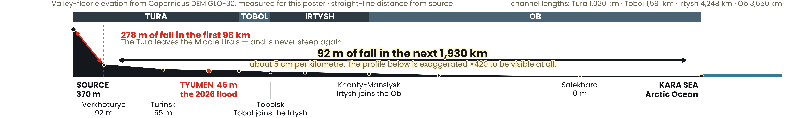
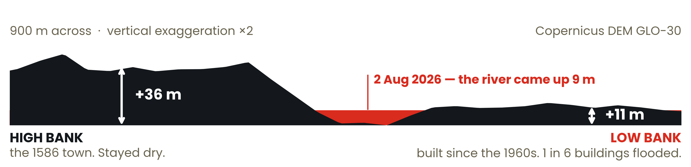
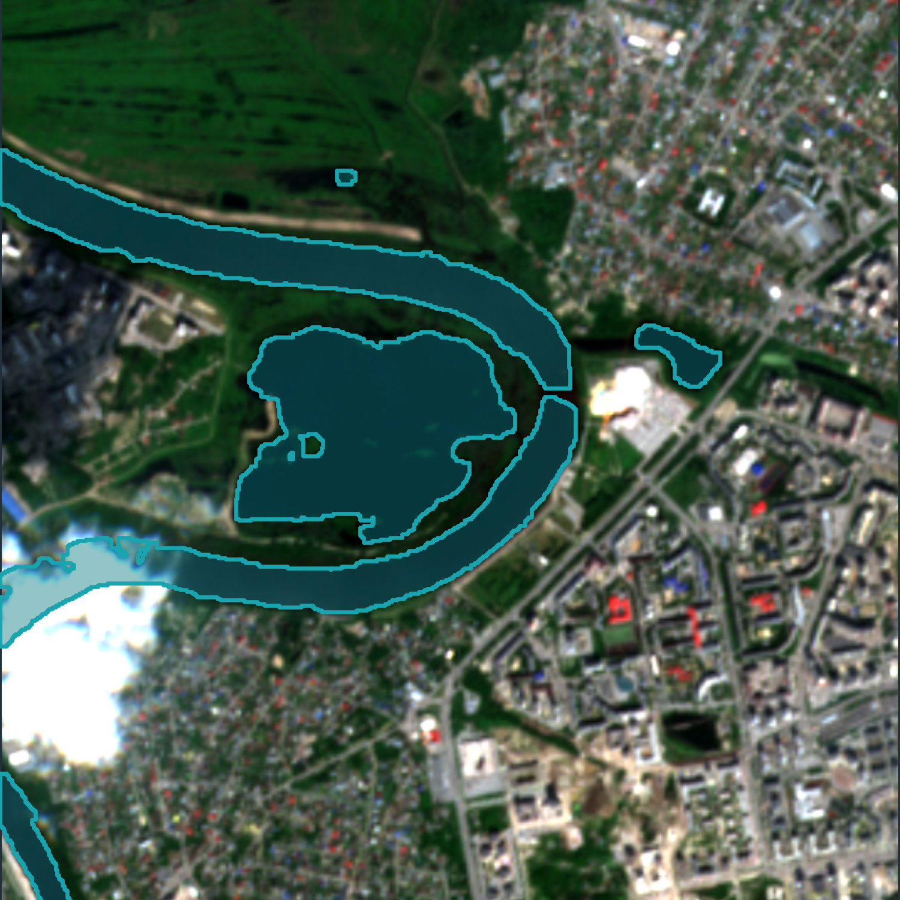
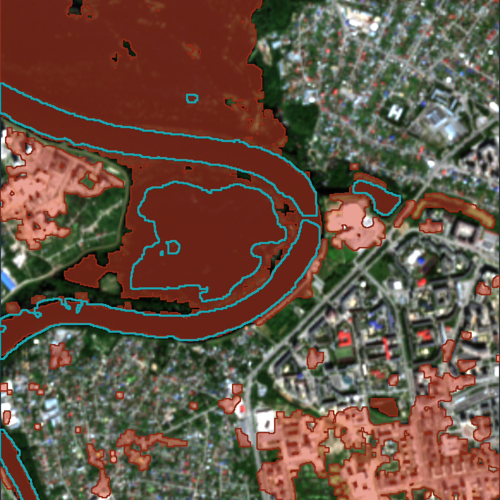
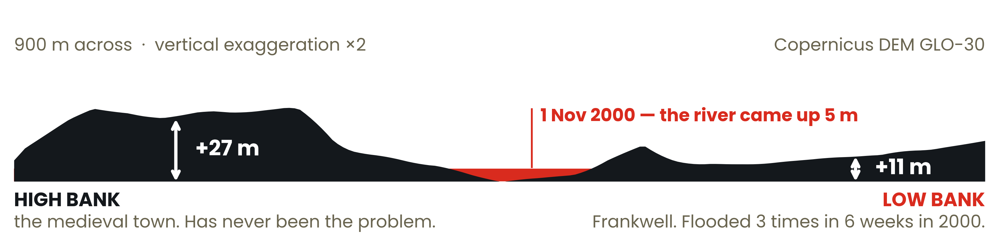

The Tura rises at 370 m in the Middle Urals and reaches the Kara Sea through the Tobol, the Irtysh and the Ob. It does four-fifths of its falling in the first 98 km. After that its gradient is five centimetres per kilometre — and almost everything downstream follows from that number, including the flood that put my home city under in August 2026.

Steep upper course: vertical erosion cuts a V-shaped valley. Once the gradient collapses, lateral erosion takes over — the river meanders and widens a floodplain, then abandons it. Those are the river terraces Tyumen is built on.
With almost no slope the channels cannot clear meltwater or rain: half of all the marshland in Russia is in this basin. The Ob also flows north, so meltwater from the thawing south meets 2 m of ice and spreads up to 50 km sideways.
27 million people; two-thirds of Russia's oil and gas. Flat ground allows just one dam on 3,650 km of Ob. Upstream, China's Irtysh–Karamay canal takes 2.5 km³ a year from the longest transboundary tributary on Earth, with no treaty.
Rain on the headwaters in the Middle Urals. Seven hundred kilometres downstream the Tura rose for three weeks and peaked at 897 cm on 2 August 2026 — a record summer flood. I filled sandbags on the low bank for two days, then mapped it from Sentinel-2.



buildings flooded on the low bank, against 1 in 250 on the high bank. Nine times as many people were in the water.
The Severn at Shrewsbury has the same shape as the Tura at Tyumen: a medieval town on the high bank, and a district on the low bank that floods. Same section, different country.

English properties in areas at risk of flooding today, and by mid-century on the Environment Agency's own projection — one property in four.
What the two sections say. Height above the river predicts flooding better than any line on a map, and it costs nothing to measure — the elevation data is free, global and open. The question is not whether a river floods, but how far above it we are building, and where the next river terrace up begins.